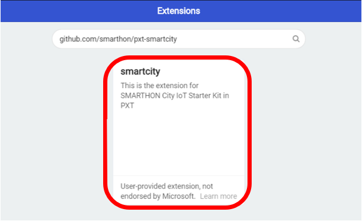
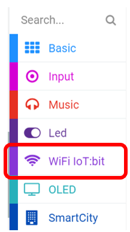

2. Smarthon IoT:bit Introduction¶
2.1. Introduction¶

Smarthon IoT:bit is an WiFi extension board for micro:bit. With input/output ports, we can obtain information from different sensors for IoT and control the actuator (such as LED lights and servo)
2.2. Structure Diagram¶

2.3. Pinout Table¶
| Module | Pin | Remark |
|---|---|---|
| General | 6V(battery holder)/ 5V(USB power supply) | - |
| - | GND | - |
| Buzzer | P0 | - |
| I/O (For Input and Output) | P0 | - |
| - | P1 | - |
| - | P2 | - |
| - | P3 | Also used by micro:bit LED |
| - | P4 | Also used by micro:bit LED |
| - | P10 | Also used by micro:bit LED |
| I/O (For Output only) | P6 | Also used by micro:bit LED |
| - | P7 | Also used by micro:bit LED |
| - | P9 | Also used by micro:bit LED |
| - | P12 | - |
| - | P13 | - |
| - | P14 | - |
| - | P15 | - |
| Distance Sensor | P14 (TRIG) | - |
| - | P15 (ECHO) | - |
| Servo | S1 | - |
| - | S2 | - |
| - | S3 | - |
| - | S4 | - |
| WiFi | P16 (RX) | - |
| - | P8 (TX) | - |
| I2C | P19 (SCK) | - |
| - | P20 (SDA) | - |
2.4. Getting Started: Add the extension¶
To Program Smarthon modules with micro:bit, you need to add the Smarthon IoT packages to the BBC micro:bit makecode platform and initialize it first.
Step 1
Find the “Extensions” block at the bottom

Step 2
Search https://github.com/smarthon/pxt-smartcity and click “smartcity” 
Step 3
“SmartCity” & “WiFi IoT:bit” package has been added successfully. 